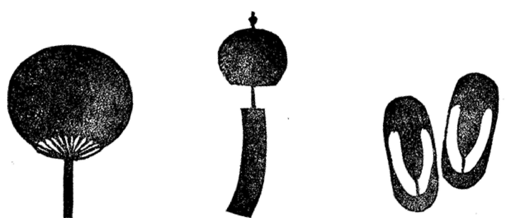

ことの木
楽曲一覧
楽譜の読み方
お問い合わせ
ブログ
様々なジャンルの音楽を 箏で奏でられるように 楽譜にしました。 楽譜のダウンロードができます。
クラシック、J-POPが人気です
J.パッヘルベル / 箏二重奏
G.ホルスト / 箏ソロ
米津玄師 / 箏ソロ
Richard Rodgers / 箏二重奏
久石譲 / 箏二重奏
島袋優 / 箏ソロ

椎名豪 / 箏ソロ
久石 譲 / 箏ソロ
黒うさ / 箏二重奏
CAGNET / 箏ソロ
TOP
 ことの木
ことの木